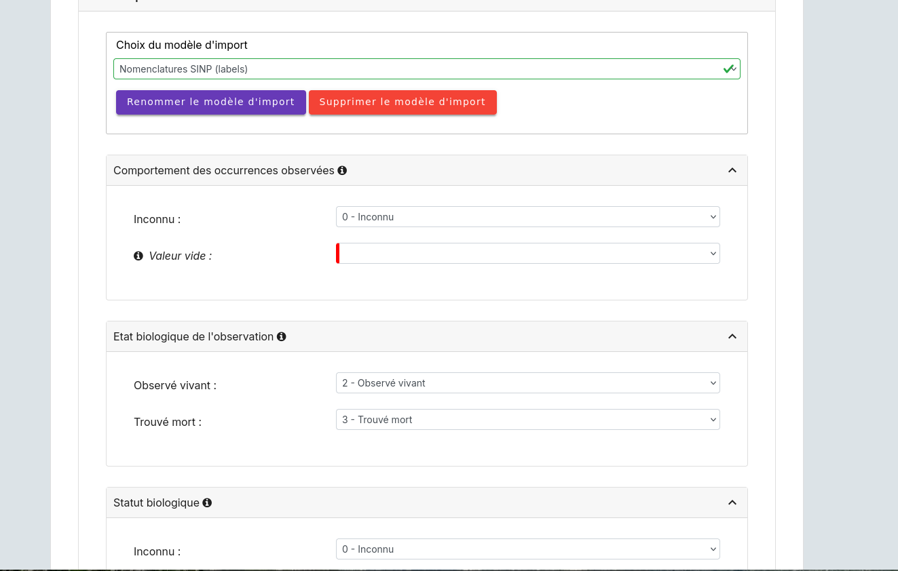

Manuel utilisateur¶
Authentification¶
Accéder à l’application de démonstration à l’adresse https://demo.geonature.fr/geonature.
Connectez-vous avec l’utilisateur admin et le mot de passe admin.
Accueil¶
Vous accédez alors à la page d’accueil de l’application GeoNature.

Le Menu de navigation à gauche permet d’accéder aux différents modules de l’application.

Le bouton à gauche du nom de la page permet de rabattre ou d’ouvrir le Menu de navigation.

Un bouton en haut à droite permet de se déconnecter de l’application.

Metadonnées¶
Ce module permet de gérer les métadonnées (Cadres d’acquisition et jeux de données) de votre instance GeoNature, basées sur le standard Métadonnées du SINP (https://standards-sinp.mnhn.fr/category/standards/metadonnees/).
Ces métadonnées permettent de décrire et d’organiser les données (occurrences de taxons, d’habitats, données protocolées…) au sein de lots de données cohérents et documentés. Les métadonnées ainsi créées sont propres à chaque instance de GeoNature, mais leur format standard permet de les diffuser vers d’autres outils ou dans le cadre du SINP.
Pour les utilisateurs disposant des droits suffisants, le module Métadonnées est accessible depuis le menu gauche de GeoNature.

Structure des métadonnées¶
Les métadonnées comprennent deux niveaux distincts, comportant chacun un ensemble d’informations descriptives :
Le cadre d’acquisition, qui permet de décrire le contexte ou le projet dans lequel les données ont été produites
Le jeu de données, qui permet de regrouper un sous-ensemble ou lot de données similaires (groupées par protocole, localités, périodes…)
Un Cadre d’acquisition peut comporter un ou plusieurs Jeux de données, comportant eux-mêmes les données de biodiversité. GeoNature permet également de regrouper des Cadres d’acquisitions ensemble, au sein d’un Cadre d’acquisition dit « parent ». Dans le cas le plus complet, l’outil permet ainsi d’organiser les données selon le schéma suivant :
Un cadre d’acquisition « parent » (ou méta-cadre selon le standard SINP) décrit un projet complexe
Ce cadre d’acquisition parent comporte un ou plusieurs Cadres d’acquisitions, décrivant des « sous-projets » simples
Ces Cadres d’acquisition comportent chacun un ou plusieurs Jeux de données
Ces Jeux de données comportent chacun un ensemble de données de biodiversité : données protocolées, occurrences de taxons, occurrences d’habitats etc

Utilisation des métadonnées dans GeoNature¶
Les métadonnées jouent un rôle central dans GeoNature, et sont nécessaires dans les différents modules de saisie ou de consultation des données. La gestion des métadonnées est donc la première étape à effectuer, avant de pouvoir produire ou exploiter les données de biodiversité en elles-mêmes. La notion de jeux de données intervient notamment pour les fonctionnalités suivantes :
- Saisie ou import de données
Lors de sa création dans GeoNature, chaque donnée doit être obligatoirement associée à un jeu de données préalablement créé. Ainsi le module d’import et la majorité des modules de saisie (Occtax, OccHab…) nécessitent de sélectionner le jeu de données auquel seront rattachées la ou les données en cours de création. Dans certains cas plus spécifiques (Monitorings par exemple), le module peut ne pas demander cette information à l’utilisateur car le jeu de données est sélectionné de manière « transparente » par la configuration du module.

- Requêtage
Les métadonnées constituent des « boîtes » dans lesquelles sont rangées les données. Tous les modules de GeoNature permettant de requêter des données (Synthèse, Dashboard, Validation, Occtax…) offrent la possibilité de filtrer par cadre d’acquisition ou par jeu de données. De cette manière, l’outil permet de rechercher ou exporter facilement ses données par « campagnes », par « études », par « projet » etc, selon l’organisation des métadonnées mise en place au sein de chaque instance.

- Permissions
Les métadonnées sont également utilisées pour l’application des permissions ou restrictions imposées à chaque utilisateur au sein de l’instance (cf https://docs.geonature.fr/admin-manual.html#gestion-des-droits). Ainsi les acteurs associés à chaque jeu de données permettront de définir les utilisateurs pouvant consulter ou alimenter les jeux de données en question selon les paramètres définis :
un utilisateur disposant uniquement des droits sur ses propres données pourra alimenter/consuter les données des jeux de données dont il est personnellement acteur,
un utilisateur ayant des droits sur les données de son organisme pourra potentiellement alimenter/consulter les données des jeux de données dont sa structure est actrice,
enfin un utilisateur ayant les droits sur toutes les données pourra alimenter/consulter les données de tous les jeux de données, quelques soient les acteurs associés
- Champs additionnels
GeoNature permet de configurer des champs additionnels « personnalisés » (https://docs.geonature.fr/admin-manual.html#administration-des-champs-additionnels), qui viennent compléter les champs du standard du sinp (sexe, stade de vie etc). Ces champs additionnels sont implémentés dans le module de saisie Occtax notamment, et peuvent être rendus disponibles uniquement pour certains jeux de données. Il devient ainsi possible, pour un jeu de données en particulier, de recueillir une variable ou une information supplémentaire qui n’apparaitrait pas dans les champs « standards ».
Fonctionnement du module Métadonnées¶
Le module Métadonnées de GeoNature permet de consulter, rechercher et gérer ses cadres d’acquisitions et jeux de données, nécessaires à la gestion des données.
Consulter, rechercher ou modifier ses métadonnées
L’accueil du module Métadonnées liste l’ensemble des Cadres d’acquisition disponibles dans l’instance GeoNature. Chaque cadre d’acquisition peut être « déplié » pour afficher les jeux de données qu’il contient.

Cette page comporte également une barre de recherche pour effectuer une recherche rapide dans les métadonnées disponibles, et une fonctionnalité de « recherche avancée ». Elle permet également de consulter les fiches détaillées, de modifier, ou de supprimer les métadonnées existantes.


Créer un cadre d’acquisition
Cette page permet également d’accéder au formulaire de création des Cadres d’acquisition via le bouton « Ajouter un Cadre d’acquisition ».

Ce formulaire permet de renseigner les différentes informations descriptions du Cadre d’acquisition (projet/programme). Les champs obligatoires (Nom, description, objectifs, territoire…) sont marqués d’un trait rouge.
Les cadres d’acquisition doivent également comporter un ou des acteurs associés (organismes, utilisateurs, ou les deux).

Il est également possible d’associer des références bibliographiques (publications etc) au cadre d’acquisition.

En cliquant sur la case à cocher « est un cadre d’acquisition parent », l’utilisateur peut créer un « métacadre » d’acquisition, qui pourra ensuite regrouper plusieurs cadres d’acquisition « simples ». A l’inverse, en sélectionnant un cadre d’acquisition parent, l’utilisateur pourra associer son cadre d’acquisition à un cadre « parent » créé préalablement.
Créer un jeu de données
De la même manière que pour les Cadres d’acquisition, la page d’accueil du module Métadonnées comporte un bouton « Ajouter un jeu de données » qui permet d’accéder au formulaire de création d’un nouveau Jeu de Données.

Ce formulaire permet à l’utilisateur de décrire son lot de données (nom, description, méthodes…) et d’indiquer à quel cadre d’acquisition (projet) il est rattaché.
Enfin comme pour les cadres d’acquisition, l’utilisateur devra définir le (ou les) acteur(s) associé(s) au jeu de données en question (producteur, financeur etc) : organismes, personnes, ou les deux. Ces choix permettront de définir les utilisateurs qui pourront - ou non - alimenter et consulter les données du jeu de données considéré en fonction des permissions configurées.

La case à cocher « actif à la saisie » permet d’ouvrir ou fermer le jeu de données, qui sera ou non proposé aux utilisateurs dans les modules de saisie ou d’import. De même, les jeux de données peuvent être - ou non - rendus validables.
Ce formulaire permet également d’associer les jeux de données à un (ou des) module(s) de GeoNature, et éventuellement à une liste de taxons.

Association entre jeux de données et modules
Afin de faciliter la saisie et limiter les erreurs, GeoNature permet d’associer chaque jeu de données à un (ou des) module(s). De cette manière, il est possible de définir depuis quel(s) module(s) le jeu de données considéré pourra être alimenté par les différents utilisateurs.
Cette association se fait depuis le formulaire de création/d’édition du jeu de données.
Association entre Jeu de données et liste de taxons
De la même manière, GeoNature permet d’associer un jeu de données à une liste de taxons. Cette association n’est pas obligatoire (par défaut, c’est la liste du module de saisie ou tout Taxref qui seront disponibles).
Cela permet notamment de réduire le nombre de taxons proposés à la saisie dans des jeux de données dédiés à un groupe d’espèces restreint (protocoles, suivis etc).
Cette association se fait depuis le formulaire de création/d’édition du jeu de données.
OccTax¶
Ce module permet de saisir des données selon le standard Occurrence de taxon du SINP (https://inpn.mnhn.fr/telechargement/standard-occurrence-taxon).

Les données sont organisées en relevés (localisation, jeu de données, date, observateur…) qui sont composés d’observations d’un ou plusieurs taxons (méthode, état, statut, détermination…).
Pour chaque taxon observé, il est possible de renseigner un ou plusieurs dénombrements.
Chaque dénombrement correspond à un stade de vie et un sexe.
Chaque relevé est associé à un jeu de données. Pour saisir dans un jeu de données, il faut donc que vous ayez créé au préalable les jeux de données dans l’application Métadonnées (MTD) du SINP.

Quand on accède au module OccTax, celui-ci affiche vos données présentes dans le module, sur la carte ainsi que dans une liste.
La carte et la liste sont interactives.
Il est possible de se déplacer et de zoomer dans la carte (avec la souris et la molette ou les bouton + et -).
Il est aussi possible de changer le fond de carte affiché.

Les relevés affichés peuvent être filtrés.
Le premier filtre permet de limiter les relevés à ceux contenant un taxon en particulier.
Pour sélectionner un taxon, saisir au moins 3 lettres de l’espèce (en français ou en latin).
Il est aussi possible de saisir les premières lettres de l’espèce et de la sous-espèce.

Il est possible de filtrer la liste des taxons par règne, en affichant le filtre :

Il est possible d’afficher des filtres complémentaires, et de supprimer les filtres existants :

Cela permet de filtrer sur tous les champs du module :

Selon les droits dont vous disposez, il est possible d’afficher, de modifier ou de supprimer un relevé :

Sur la liste, il est également possible de modifier les colonnes affichées :


Afficher un relevé¶
Si vous affichez un relevé, vous accéderez à sa fiche complète :

Si vous cliquez sur un des taxons observés dans ce relevé, cela affichera le détail de l’observation du taxon :

Vous pouvez aussi consulter les dénombrements du taxon observé :

Il est aussi possible d’afficher les informations géographiques liées au relevé :


Selon les droits dont vous disposez, il est possible de modifier un relevé directement depuis sa fiche Détail :

Ajouter un relevé¶
Depuis la liste des relevés, cliquer sur le bouton de création d’un relevé :

Vous accédez alors à un formulaire de saisie à compléter :

Commencez par localiser le relevé, sous forme de point (en cliquant sur la carte ou en saisissant les coordonnées GPS du point) :

De ligne (en recliquant sur le dernier point de la ligne pour la terminer) :

Ou de polygone (en recliquant sur le premier point du polygone pour le terminer) :

Les localisations peuvent être modifiées.
Pour les points, il suffit de les déplacer ou de recliquer ailleurs sur la carte.
Pour les lignes et les polygones, il faut cliquer sur le bouton de modification.

Vous pouvez alors déplacer les sommets existants ou en créer de nouveaux pour affiner le tracé en cliquant sur les sommets transparents.
Cliquer sur SAVE pour enregistrer les modifications apportées à une ligne ou un polygone.
Les altitudes minimum et maximum du relevé sont calculées automatiquement mais peuvent être modifiées manuellement.
Les informations géographiques du relevé (communes notamment) sont aussi calculées automatiquement.
Pour les afficher, il faut cliquer sur le bouton d’information :

Une fois les informations du relevé renseignées (observateurs, jeu de données, date et commentaire optionnel),
vous pouvez ajouter un premier taxon à celui-ci en cliquant sur Ajouter un taxon sur ce relevé :


Par défaut l’ensemble des taxons de Taxref sont disponibles à la saisie. Il est possible de resteindre cette liste pour mettre une liste personalisée via les listes TaxHub: - au niveau du module (paramètre id_taxon_list. La paramètre doit être un entier correspondant à l’identifiant de la liste de la table taxonomie.bib_listes ) - au niveau d’un jeu de données (via le formulaire de saisie des JDD, rubriques « spécificités GeoNature »)
Pour sélectionner un taxon, saisissez au moins les 3 premières lettres de son nom latin ou français.
Vous pouvez aussi saisir les 3 premières lettres de l’espèce et de la sous-espèce.
Renseignez ensuite les autres champs relatifs au taxon. Les valeurs proposées dans les listes dépendent du rang et du groupe du taxon selectionné :

Des valeurs par défaut sont renseignées pour certains.
Vous pouvez ensuite renseigner un ou plusieurs dénombrements pour le taxon observé.
Par défaut, un dénombrement indéterminé d’un individu est renseigné :

Une fois le taxon renseigné, cliquer sur VALIDER LE TAXON pour l’enregistrer :

Vous pouvez alors :
Modifier le taxon enregistré
Supprimer le taxon enregistré
Ajouter un autre taxon au relevé
Enregistrer le relevé pour revenir à la liste des relevés.
Pour ajouter un taxon au relevé, il faut cliquer sur Ajouter un taxon sur ce relevé et le renseigner comme le précédent :

Modifier un relevé¶
Si vous modifiez un relevé existant, vous accédez à sa fiche renseignée, sur laquelle vous pouvez modifier la localisation, les informations du relevé, les taxons observés et leurs dénombrements :

Vous pouvez ajouter un taxon au relevé en cliquant sur Ajouter un taxon sur ce relevé :

Ou modifier une observation existante d’un taxon en le selectionnant dans la liste des taxons déjà enregistrés :


Exports¶
Une fois que vous avez saisi vos relevés et observations depuis le formulaire, vous pouvez exporter ces données en CSV selon le standard Occurrence de taxon du SINP.
Deux méthodes sont possibles pour exporter les données :
Depuis le module « Occtax »
Depuis la liste de vos relevés de l’interface carte-liste, filtrez d’abord vos relevés par jeu de données (ou autre) et cliquez sur le bouton Rechercher.

Puis cliquez sur le bouton Télécharger les données en bas de la liste des relevés.

Une fenêtre s’ouvre, fournissant des informations sur le téléchargement des données. Selectionnez ensuite le format CSV pour GINCO :

Depuis le module d’export :
Les exports se font par jeu de données.

Vous obtenez alors un CSV par jeu de données.
Pour disposer dans l’export de toutes les informations saisies, une ligne correspond à un dénombrement d’un taxon.

Synthèse¶
Ce module permet de consulter, rechercher et exporter les données provenant des différentes sources et protocoles avec leur tronc commun, basé sur le standard Occurrences de taxon du SINP (https://inpn.mnhn.fr/telechargement/standard-occurrence-taxon).
Il permet aussi d’afficher la fiche détaillée de chaque occurrence et de revenir à sa fiche source si elle a été saisie dans un module de GeoNature.

Accéder à la synthèse¶
Cliquez sur le module Synthèse, dans le menu de navigation :

Présentation de la synthèse¶
La page principale de la synthèse est composée de 3 blocs :
Rechercher dans les résultats
Visualiser les résultats sur la carte
Visualiser les résultats en liste

Par défaut, la synthèse affiche les 100 observations les plus récentes. Il est possible d’accéder aux données souhaitées en appliquant un ensemble de filtres.
Détail d’une observation¶
Il est possible d’accéder au détail d’une observation en cliquant sur le symbole (i) à gauche d’une observation. Le détail d’une observation correspond à l’ensemble des informations contenues dans la synthèse pour cette observation.
Une observation au sens de la synthèse ne correspond pas tout à fait à la donnée saisie initialement. C’est une représentation simplifiée et unifiée des données qui repose sur le standard SINP et qui répond aux questions suivantes :
Où ?
Quand ? : Date et heure de l’observation
Qui ? : Observateur
Quoi ? : Taxon, nombre et type d’individus, état biologique, …
Dans quel cadre ?
Toutes les données de la synthèse sont ramenées au niveau du dénombrement de taxon (exemple : 1 individu mâle adulte de Chevêche). Si une occurrence est constituée de 2 dénombrements, il y aura 2 enregistrements dans la synthèse (exemple : 1 individu mâle adulte et 1 individu femelle indéterminée de Chevêche).

Rechercher des observations¶
1. Filtrer les données géographiquement :
Il y a 3 façons de filtrer géographiquement les données :
en sélectionnant une commune
en dessinant une zone sur la carte à l’aide des outils de dessin (rectangle, polygone ou cercle)
en important un fichier de la zone
Filtrer par communes :
Dans le panneau filtre :
cliquez sur le champ Communes
saisissez les premières lettre de la commune
sélectionnez la commune souhaitée
Il est possible de sélectionner plusieurs communes.

Dessiner une zone :
Sur la carte, choisir un outil de dessin (rectangle, polygone ou cercle) et réaliser votre selection sur la carte.

Après avoir dessiné une zone, il est nécessaire de cliquer sur le bouton Rechercher.
Importer un fichier :
Il est possible d’importer une/des zone(s) de sélection directement à partir d’un fichier GeoJson.
Vous pouvez préparer ce fichier avec QGIS depuis un fichier SHP ou autre. Le fichier doit être enregistré au format GeoJson (projection 4326).
Sur la couche souhaitée :
Faire un clic droit sur la couche puis sélectionner Exporter > Sauvegarder les entités sous…

- Enregistrer le fichier en sélectionnant les bons paramètres :
Format : GeoJson
SCR : WGS 84 (4326)
Pour des questions de performance il est possible de ne pas exporter les données attributaires

Importer le fichier dans la synthèse GeoNature :
Cliquer sur l’icône ouvrir un fichier
Sélectionner le fichier
La ou les zone(s) apparaissent sur la carte
Lancer la recherche

2. Filtrer les données via la taxonomie
Il est possible de rechercher les données en utilisant des critères taxonomiques, en recherchant soit sur un taxon ou un groupe taxonomique en particulier, soit en se basant sur des critères taxonomiques (statut de protection, attributs)
Recherche simple :
Dans le panneau filtre :
cliquez sur le champ taxon
saisissez les premières lettre du taxon
sélectionnez le taxon souhaité
Il est possible de sélectionner plusieurs taxons.

Recherche avancée :
Dans le panneau filtre dans la section « Quoi ? » cliquer sur Avancé.
Vous pourrez :
Sélectionner un ou des groupes taxonomiques (exemple Chiroptera)
Filtrer sur les listes rouge UICN,…
Filtrer sur des attributs spécifiés dans TaxHub : patrimonialité, enjeu prioritaire, …

3. Autres filtres
Il est également possible de filtrer :
sur une date ou une période donnée
sur un observateur
sur un jeu de données

Admin¶
C’est le module « backoffice » de GeoNature. Il permet notamment de gérer les permissions (CRUVED et autres filtres), les nomenclatures (typologies et vocabulaires) utilisées dans les différents modules de GeoNature ainsi que les champs additionnels.
Gestion des permissions¶
Depuis le version 2.13.0 de GeoNature, le système des permissions a été entièrement revu pour : - pouvoir leur associer d’autres types de filtres (sensibilité notamment), - les simplifier et clarifier en supprimant l’héritage et en définissant les permissions disponibles pour chaque module
Le modèle de données des permissions et leur logique ayant été revu, il a fallu faire évoluer leur interface d’administration.
Il a été retenu de réaliser cette nouvelle interface d’administration des permissions dans le module ADMIN existant de GeoNature.
Il y est possible de lister toutes les permissions attribuées dans une instance GeoNature :
Il est possible de filtrer rapidement cette liste en saisissant un nom d’utilisateur ou de groupe, ou en appliquant un filtre par module, action, par utilisateur ou groupe… :
Il est possible de modifier, supprimer ou ajouter une nouvelle permission :
La liste des permissions ne contient que celles qui ont un réel usage car elles sont déclarées par chaque module. Une fois que l’on a sélectionné un groupe ou utilisateur, la liste des permissions ne propose que des permissions qui n’ont pas été définies pour celui-ci, ou alors pour lesquelles on peut définir plusieurs permissions se combinant (Exemple du Read de la Synthèse pour lequel on peut créer une permission indiquant qu’un utilisateur voit toutes les données de son organisme sans filtre de sensibilité, mais qu’il voit toutes les données avec un filtre de sensibilité) :
Une fois qu’une permission a été selectionnée, si des filtres peuvent être appliqués à celle-ci dans ce module, alors les filtres sont affichés :
Si aucun filtre n’est sélectionné, alors la permission s’applique sur toutes les données concernées.
Il est aussi possible d’afficher et de gérer les permissions par groupes ou par utilisateurs :
Quand on clique sur un groupe ou utilisateur pour en consulter le détail des permissions, toutes les permissions disponibles de tous les modules sont affichées :
Les permissions sur fond rouge, qui affichent uniquement un + indiquent que le groupe ou utilisateur n’a pas cette permission et qu’on peut lui ajouter en cliquant sur ce +.
Les permissions dont disposent le groupe ou l’utilisateur sont indiquées en vert (si sans filtre) ou en bleu (si avec filtre) :
Pour les utilisateurs sont listées les permissions qui lui sont attribués directement individuellement, mais aussi les permissions effectives qui s’appliquent à lui (selon les groupes auquel il appartient) :
Import¶
Depuis sa version 2.15, le module Import a été intégré à GeoNature et il permet d’importer des données depuis un fichier CSV dans deux modules :
Synthèse
Occhab
Créer un import¶
Pour réaliser un import dans une des destinations de GeoNature, vous devez :
Une fois connecté à GeoNature, accédez au module Import. L’accueil du module affiche la « liste des imports » en cours ou terminés, selon les permissions de l’utilisateur connecté. Vous pouvez alors finir un import en cours, commencer un nouvel import ou supprimer un import.

Pour commencer un nouvel import, cliquez sur le bouton « + » en bas de la liste des imports. Dans la fenêtre qui s’affiche, sélectionner la destination (e.g. Occhab, Synthèse) de votre import.

Une fois la destination choisie, vous serez redirigé vers une nouvelle page. Dans ce nouveau formulaire, choisissez le jeu de données qui sera associé aux données importées. Puis, téléverser le fichier contenant les données que vous souhaitez importer. À ce jour, seul le format de fichier CSV est accepté par GeoNature. Une fois les champs remplis, cliquez sur le bouton « Suivant ».
Note
Si aucun jeu de données n’apparait dans la liste déroulante, vérifier que le jeu de données souhaité est bien activé et associé à la destination souhaitée.

4. Dans ce nouveau formulaire, indiquez les paramètres de lecture de votre fichier. Plusieurs paramètres seront automatiquement détectés par GeoNature. Une fois, les champs remplis, cliquez sur le bouton « Suivant ».
Note
A partir de cette étape, il est possible d’enregistrer votre import et le reprendre plus tard depuis la liste d’import.

Maintenant que le fichier est téléversé, il s’agit de faire correspondre les champs du fichier importé aux champs accessibles d’une (ou plusieurs) entité.s (e.g. Station). Pour vous aider dans la saisie, vous pouvez utiliser un mapping existant ou créer un nouveau. Lors de la validation du formulaire, il sera possible d’enregistrer votre mapping pour pouvoir le réutiliser plus tard. Une fois, la mise en correspondance terminée, cliquez sur le bouton « Suivant ».
Avertissement
Dans le cas où la destination comporte plusieurs entités, les champs requis pour une entité ne seront affichés uniquement si un des champs de l’entité est remplie (hors identifiant UUID).

Note
Chaque destination contient un mapping par défaut. Ce dernier s’appuie sur les fichiers exportés par le module depuis l’interface de saisie.
À la fin du formulaire, vous pouvez visualiser le nombre de correspondances effectuées et les colonnes du fichier source qui n’ont pas été utilisées.

Si des champs de nomenclatures ont été mappés, chaque valeur distincte présente dans le fichier doit être mise en correspondance avec une nomenclature présente dans la base de données. Tout comme le mapping des colonnes, vous pouvez utiliser un mapping de valeur existant ou créer un nouveau. Une fois la correspondance terminée, cliquez sur le bouton « Suivant ».

7. Pour pouvoir importer les données présentes dans le fichier source, il est nécessaire d” effectuer des contrôles sur les données : vérification des types, vérification des formats de données (dates), vérification de cohérence de données (date début < date fin), etc. Pour lancer, le contrôle de données cliquez sur le bouton « Lancer la vérification ».

Une fois la vérification des données effectuée, un aperçu des données valides ainsi que leur emprise spatiale (bounding box) sont affichés. Si des erreurs sont présentes dans les données, un bouton « Rapport d’import/erreurs/avertissement » permet d’afficher les erreurs et d’ajuster votre fichier source ou les paramètres de l’import. De plus, il est possible de télécharge un fichier contenant unique les lignes contenant des erreurs. Si l’aperçu des données qui seront importées vous convient, cliquez sur le bouton « Importer les [n] entités valides ».

9. Une fois l’import terminé, un rapport récapitulatif est affiché avec les différents paramètres de l’import mais aussi plusieurs indicateurs statistiques sous forme de tableau et de graphique(s). Il est aussi possible d’exporter une version PDF de ce rapport.

Modifier un import¶
Pour modifier un import, rendez-vous dans la « Liste des imports », cliquez sur l’icone en forme de « crayon » dans la colonne « Actions ».
Danger
La modification d’un import terminé provoquera la suppression des données importées dans la table temporaire et dans la table de destination.
Supprimer un import¶
Pour supprimer un import, il suffit de cliquer sur l’icone en forme de poubelle dans la colonne « Actions ».
Danger
La suppression d’un import terminé entrainera la suppression des données dans la table de destination.
Exemple de fichier CSV pour l’import Occhab¶
Ci-dessous un exemple de fichier CSV avec les colonnes et le contenu attendu dans l’import de données vers Occhab.
Le fichier CSV pour un import Occhab représente un tableau à plat des données des stations et de leurs habitats. Par conséquent, les données d’une station doivent être répétées autant de fois que son nombre d’habitats.
id_origine |
UUID_station |
geometry_station |
UUID_hab |
cd_hab |
STATUTS |
|---|---|---|---|---|---|
5 |
POINT (30 10) |
27 |
Ajout d’une station auquel on associe un habitat (UUIDs seront généré) |
||
5 |
POINT (30 10) |
32 |
Ajout d’un habitat dans une station (l’UUID habitat sera généré) |
||
AAA |
POINT (15 10) |
18 |
Ajout d’une station auquel on associe un habitat (génération de l’UUID de l’habitat) |
||
CCC |
POINT (9 5) |
11 |
Ajout d’une station auquel on associe un habitat (génération de l’UUID de l’habitat) |
||
CCC |
15 |
Ajout d’un habitat dans une station (répéter les informations d’une station déclarée dans le fichier est optionnel) |
|||
XXX |
22 |
Ajout d’un habitat dans une station existante (identifié par l’UUID XXX) dans la base de données |
|||
6 |
POINT (9 4) |
Ajout d’une station |
|||
6 |
POINT (9 4) |
Ligne ignorée car doublon de la ligne 8 |
|||
BBB |
POINT (9 4) |
55 |
Provoque une erreur car il y a une incohérence dans les données d’une station sur différentes lignes |
||
BBB |
POINT (20 3) |
58 |
Provoque une erreur car il y a une incohérence dans les données d’une station sur différentes lignes |
Plus d’exemples sont disponibles dans le fichier valid_file.csv dans le dossier backend/geonature/tests/imports/files/occhab/valid_file.csv.